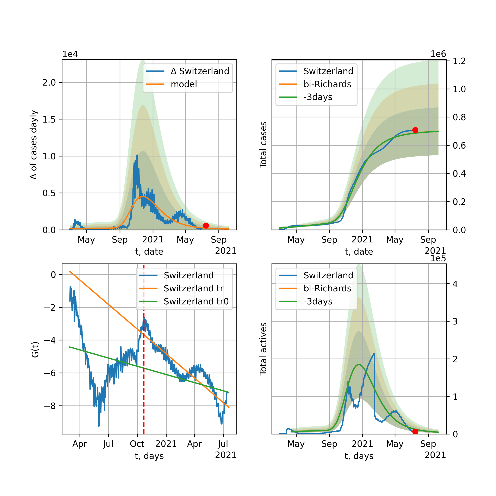

Multi-logistic model of COVID-19 dynamics
Model, code, results
Project maintained by algmaknick Hosted on GitHub Pages — Theme by mattgraham
World

World data at: 2020-11-21
+3 day model MAPE: 0.002951
model: bi-Richards
coeffs: [2.03182067e+07 1.85447038e+00 1.49926571e+02 2.24475994e-02]
rational stdev: 0.176906
forecast at the end of period: +662 days
deltaDaycases: 2650
total cases: 120569847 ± 21329543
total death: 2857155 ± 1516344
bi-Richards approximation splitting point: 200
actives k: 31
trend coefficient of determination: 0.812033
intercept: -3.150374
slope: -0.011094
trend coefficient of determination: 0.224958
intercept: -6.072777
slope: 0.004788
European Union

European Union data at: 2020-11-21
+3 day model MAPE: 0.031877
model: bi-Richards
coeffs: [9.56309789e+06 4.16199010e-02 2.53854565e+02 4.29196779e+00]
rational stdev: 0.239749
forecast at the end of period: +105 days
deltaDaycases: 1
total cases: 11034144 ± 2645429
total death: 251064 ± 180577
bi-Richards approximation splitting point: 200
actives k: 26
trend coefficient of determination: 0.536543
intercept: -52.828287
slope: -0.094876
trend coefficient of determination: 0.945469
intercept: -46.936015
slope: -0.098031
Brazil

Brazil data at: 2020-11-21
+3 day model MAPE: 0.000052
model: bi-Richards
coeffs: [-8.61507092e+03 7.78950414e-01 4.56994356e+01 3.66395759e-01]
rational stdev: 0.262352
forecast at the end of period: +252 days
deltaDaycases: 209
total cases: 6740853 ± 1768477
total death: 188229 ± 148146
bi-Richards approximation splitting point: 210
actives k: 17
trend coefficient of determination: 0.827208
intercept: -4.268029
slope: -0.034355
trend coefficient of determination: 0.032027
intercept: -9.899009
slope: -0.005291
Russia

Russia data at: 2020-11-21
+3 day model MAPE: 0.002081
model: bi-Richards
coeffs: [2.96044410e+06 6.93910478e-01 5.70119390e+01 2.93633396e-02]
rational stdev: 0.178247
forecast at the end of period: +322 days
deltaDaycases: 99
total cases: 4089299 ± 728906
total death: 70810 ± 37865
bi-Richards approximation splitting point: 200
actives k: 26
trend coefficient of determination: 0.731426
intercept: -3.043605
slope: -0.015892
trend coefficient of determination: 0.032255
intercept: -5.304446
slope: 0.001878
USA

USA data at: 2020-11-21
+3 day model MAPE: 0.006754
model: bi-Richards
coeffs: [-5.76441528e+05 2.70153690e-01 1.76180274e+02 9.36326069e-01]
rational stdev: 0.283281
forecast at the end of period: +665 days
deltaDaycases: 806
total cases: 22478616 ± 6367760
total death: 472639 ± 401668
bi-Richards approximation splitting point: 155
actives k: 52
trend coefficient of determination: 0.700716
intercept: -12.204277
slope: -0.053669
trend coefficient of determination: 0.010393
intercept: -19.498088
slope: -0.000909
Spain

Spain data at: 2020-11-20
+3 day model MAPE: 0.005445
model: bi-Richards
coeffs: [2.66061943e+06 1.28112525e+00 5.83081221e+00 1.37561795e-02]
rational stdev: 0.262815
forecast at the end of period: +463 days
deltaDaycases: 11
total cases: 3087271 ± 811382
total death: 82793 ± 65277
bi-Richards approximation splitting point: 200
actives k: 35
trend coefficient of determination: 0.156775
intercept: -3.929340
slope: -0.011116
trend coefficient of determination: 0.026207
intercept: -3.587599
slope: -0.004240
Italy

Italy data at: 2020-11-21
+3 day model MAPE: 0.041233
model: bi-Richards
coeffs: [1.27755956e+06 6.55888295e-02 2.59828239e+02 2.78133004e+00]
rational stdev: 0.159446
forecast at the end of period: +77 days
deltaDaycases: 0
total cases: 1527377 ± 243534
total death: 54500 ± 26069
bi-Richards approximation splitting point: 200
actives k: 35
trend coefficient of determination: 0.551384
intercept: -30.922982
slope: -0.070225
trend coefficient of determination: 0.437319
intercept: -33.392836
slope: -0.030545
United Kingdom

United Kingdom data at: 2020-11-21
+3 day model MAPE: 0.001107
model: bi-Richards
coeffs: [1.88049419e+06 1.04950797e-01 2.10659110e+02 3.93539615e-01]
rational stdev: 0.206149
forecast at the end of period: +182 days
deltaDaycases: 22
total cases: 2203376 ± 454223
total death: 80596 ± 49844
bi-Richards approximation splitting point: 200
actives k: 35
trend coefficient of determination: 0.625538
intercept: -6.551252
slope: -0.026860
trend coefficient of determination: 0.375578
intercept: -6.294793
slope: -0.012847
France

France data at: 2020-11-21
+3 day model MAPE: 0.027628
model: bi-Richards
coeffs: [1.97964814e+06 3.54971669e-02 2.50523506e+02 8.23623204e+00]
rational stdev: 0.097647
forecast at the end of period: +147 days
deltaDaycases: 0
total cases: 2122188 ± 207225
total death: 48407 ± 14180
bi-Richards approximation splitting point: 95
actives k: 105
trend coefficient of determination: 0.750313
intercept: -64.909635
slope: -0.549797
trend coefficient of determination: 0.852280
intercept: -88.642920
slope: -0.119592
Germany

Germany data at: 2020-11-21
+3 day model MAPE: 0.050373
model: bi-Richards
coeffs: [7.68213398e+05 5.12344376e-02 2.48177640e+02 3.84059760e+00]
rational stdev: 0.206510
forecast at the end of period: +56 days
deltaDaycases: 0
total cases: 993192 ± 205104
total death: 15400 ± 9540
bi-Richards approximation splitting point: 210
actives k: 17
trend coefficient of determination: 0.456107
intercept: -44.666800
slope: -0.056602
trend coefficient of determination: 0.857420
intercept: -35.933019
slope: -0.078307
Turkey

Turkey data at: 2020-11-21
+3 day model MAPE: 0.014045
model: bi-Richards
coeffs: [ 3.19642648e+05 2.12080165e+00 -2.72431534e+01 8.64016110e-03]
rational stdev: 0.279607
forecast at the end of period: +168 days
deltaDaycases: 197
total cases: 586082 ± 163873
total death: 16246 ± 13627
bi-Richards approximation splitting point: 190
actives k: 17
trend coefficient of determination: 0.645960
intercept: -2.490772
slope: -0.020699
trend coefficient of determination: 0.602388
intercept: -7.319935
slope: 0.009274
Iran

Iran data at: 2020-11-21
+3 day model MAPE: 0.003468
model: bi-Richards
coeffs: [7.69314150e+06 1.63367043e-01 1.82248410e+02 8.50028954e-02]
rational stdev: 0.260363
forecast at the end of period: +406 days
deltaDaycases: 1364
total cases: 8202195 ± 2135548
total death: 432158 ± 337553
bi-Richards approximation splitting point: 200
actives k: 17
trend coefficient of determination: 0.757346
intercept: -2.914515
slope: -0.019934
trend coefficient of determination: 0.773790
intercept: -8.987231
slope: 0.013532
Canada

Canada data at: 2020-11-21
+3 day model MAPE: 0.005710
model: bi-Richards
coeffs: [1.47205110e+06 4.50741415e-01 1.96508357e+01 2.70647850e-02]
rational stdev: 0.246712
forecast at the end of period: +308 days
deltaDaycases: 820
total cases: 1525218 ± 376290
total death: 53411 ± 39531
bi-Richards approximation splitting point: 200
actives k: 17
trend coefficient of determination: 0.775146
intercept: -2.315580
slope: -0.023993
trend coefficient of determination: 0.399868
intercept: -6.993492
slope: 0.009758
South Africa

South Africa data at: 2020-11-21
+3 day model MAPE: 0.004074
model: bi-Richards
coeffs: [1.57648940e+05 3.53057879e+00 6.85471893e+01 8.75967815e-03]
rational stdev: 0.294095
forecast at the end of period: +42 days
deltaDaycases: 462
total cases: 792614 ± 233103
total death: 21585 ± 19044
bi-Richards approximation splitting point: 200
actives k: 17
trend coefficient of determination: 0.701270
intercept: -1.698804
slope: -0.019509
trend coefficient of determination: 0.073937
intercept: -7.264495
slope: 0.004621
Belgium

Belgium data at: 2020-11-21
+3 day model MAPE: 0.016047
model: bi-Richards
coeffs: [4.77190489e+05 6.26957358e-02 2.35015407e+02 4.08787160e+00]
rational stdev: 0.179258
forecast at the end of period: +42 days
deltaDaycases: 0
total cases: 543140 ± 97362
total death: 15138 ± 8140
bi-Richards approximation splitting point: 170
actives k: 35
trend coefficient of determination: 0.562503
intercept: -38.124132
slope: -0.107276
trend coefficient of determination: 0.789011
intercept: -33.631417
slope: -0.093952
Peru

Peru data at: 2020-11-21
+3 day model MAPE: 0.002253
model: bi-Richards
coeffs: [5.93468412e+05 3.38949186e+00 2.02957000e+01 9.75499886e-03]
rational stdev: 0.249991
forecast at the end of period: +42 days
deltaDaycases: 246
total cases: 954579 ± 238636
total death: 35792 ± 26843
bi-Richards approximation splitting point: 110
actives k: 21
trend coefficient of determination: 0.800858
intercept: -1.453344
slope: -0.026705
trend coefficient of determination: 0.772370
intercept: -2.389075
slope: -0.014934
Netherlands

Netherlands data at: 2020-11-21
+3 day model MAPE: 0.018983
model: bi-Richards
coeffs: [4.35676811e+05 5.04618996e-02 2.33073528e+02 2.56704794e+00]
rational stdev: 0.084962
forecast at the end of period: +42 days
deltaDaycases: 11
total cases: 485836 ± 41277
total death: 8991 ± 2291
bi-Richards approximation splitting point: 150
actives k: 35
trend coefficient of determination: 0.653800
intercept: -24.835551
slope: -0.083529
trend coefficient of determination: 0.818492
intercept: -24.552590
slope: -0.049098
India

India data at: 2020-11-21
+3 day model MAPE: 0.001761
model: bi-Richards
coeffs: [6.32312092e+06 9.93026301e-02 1.45731633e+02 3.25076069e-01]
rational stdev: 0.222369
forecast at the end of period: +322 days
deltaDaycases: 108
total cases: 10518345 ± 2338957
total death: 154102 ± 102802
bi-Richards approximation splitting point: 92
actives k: 13
trend coefficient of determination: 0.899089
intercept: -3.534288
slope: -0.045772
trend coefficient of determination: 0.975836
intercept: -5.215086
slope: -0.021062
Switzerland

Switzerland data at: 2020-11-20
+3 day model MAPE: 0.033196
model: bi-Richards
coeffs: [2.59146210e+05 7.00135244e-02 2.41340804e+02 2.96492572e+00]
rational stdev: 0.195279
forecast at the end of period: +43 days
deltaDaycases: 0
total cases: 295387 ± 57683
total death: 4057 ± 2376
bi-Richards approximation splitting point: 205
actives k: 17
trend coefficient of determination: 0.349940
intercept: -31.256079
slope: -0.039877
trend coefficient of determination: 0.801626
intercept: -15.769751
slope: -0.097183
Ecuador

Ecuador data at: 2020-11-21
+3 day model MAPE: 0.001831
model: bi-Richards
coeffs: [ 1.69279368e+05 1.62878178e+00 -1.00738572e+02 1.01876571e-02]
rational stdev: 0.080508
forecast at the end of period: +182 days
deltaDaycases: 48
total cases: 231270 ± 18619
total death: 16436 ± 3969
bi-Richards approximation splitting point: 80
actives k: 26
trend coefficient of determination: 0.273841
intercept: -2.222603
slope: -0.047330
trend coefficient of determination: 0.031596
intercept: -4.448280
slope: -0.003935
Portugal

Portugal data at: 2020-11-21
+3 day model MAPE: 0.067378
model: bi-Richards
coeffs: [ 9.10479044e+01 4.49677271e-02 7.40760378e+01 -5.53496798e+01]
rational stdev: 0.212200
forecast at the end of period: +42 days
deltaDaycases: 60293
total cases: 1429198 ± 303275
total death: 21351 ± 13592
bi-Richards approximation splitting point: 170
actives k: 22
trend coefficient of determination: 0.575803
intercept: 468.793231
slope: 0.995247
trend coefficient of determination: 0.944001
intercept: 418.361035
slope: 1.013659
Saudi Arabia

Saudi Arabia data at: 2020-11-21
+3 day model MAPE: 0.000257
model: bi-Richards
coeffs: [3.24188386e+04 2.12518662e+00 4.54648219e+01 1.18139813e-02]
rational stdev: 0.227135
forecast at the end of period: +42 days
deltaDaycases: 147
total cases: 364253 ± 82734
total death: 5910 ± 4027
bi-Richards approximation splitting point: 200
actives k: 17
trend coefficient of determination: 0.971031
intercept: -1.790067
slope: -0.024547
trend coefficient of determination: 0.334902
intercept: -5.460224
slope: -0.006609
Sweden

Sweden data at: 2020-11-20
+3 day model MAPE: 0.062004
model: bi-Richards
coeffs: [1.35193022e+05 6.40790580e-02 2.60086960e+02 4.24802315e+00]
rational stdev: 0.262940
forecast at the end of period: +78 days
deltaDaycases: 0
total cases: 223007 ± 58637
total death: 6858 ± 5409
bi-Richards approximation splitting point: 200
actives k: 35
trend coefficient of determination: 0.717837
intercept: -31.065575
slope: -0.150260
trend coefficient of determination: 0.266885
intercept: -50.851545
slope: -0.014118
Pakistan

Pakistan data at: 2020-11-21
+3 day model MAPE: 0.010163
model: bi-Richards
coeffs: [ 1.37987645e+06 4.84762857e-01 -1.69762563e+02 1.50026594e-02]
rational stdev: 0.276242
forecast at the end of period: +518 days
deltaDaycases: 636
total cases: 1577818 ± 435859
total death: 32309 ± 26775
bi-Richards approximation splitting point: 170
actives k: 26
trend coefficient of determination: 0.752434
intercept: -1.664914
slope: -0.023837
trend coefficient of determination: 0.619285
intercept: -9.403695
slope: 0.014329
Ireland

Ireland data at: 2020-11-21
+3 day model MAPE: 0.011093
model: bi-Richards
coeffs: [4.33546859e+04 5.04935823e-02 2.27573399e+02 2.63584390e+00]
rational stdev: 0.609073
forecast at the end of period: +42 days
deltaDaycases: 0
total cases: 69529 ± 42348
total death: 2004 ± 3661
bi-Richards approximation splitting point: 170
actives k: 35
trend coefficient of determination: 0.609563
intercept: -22.103022
slope: -0.094436
trend coefficient of determination: 0.500561
intercept: -27.374652
slope: -0.025842
Mexico

Mexico data at: 2020-11-21
+3 day model MAPE: 0.001161
model: bi-Richards
coeffs: [2.35473806e+05 2.63087102e+00 1.16321967e+02 1.46479463e-02]
rational stdev: 0.253971
forecast at the end of period: +112 days
deltaDaycases: 261
total cases: 1183583 ± 300596
total death: 116185 ± 88523
bi-Richards approximation splitting point: 200
actives k: 17
trend coefficient of determination: 0.945833
intercept: -1.747927
slope: -0.018735
trend coefficient of determination: 0.132998
intercept: -3.550956
slope: -0.007830
Singapore

Singapore data at: 2020-11-21
+3 day model MAPE: 0.000608
model: bi-Richards
coeffs: [3.97929066e+04 1.48073841e-01 6.64935525e+01 1.93344203e-01]
rational stdev: 0.362590
forecast at the end of period: +42 days
deltaDaycases: 2
total cases: 58934 ± 21368
total death: 28 ± 30
bi-Richards approximation splitting point: 80
actives k: 26
trend coefficient of determination: 0.149638
intercept: -3.125296
slope: -0.017412
trend coefficient of determination: 0.864203
intercept: -1.809297
slope: -0.033845
Chile

Chile data at: 2020-11-21
+3 day model MAPE: 0.002379
model: bi-Richards
coeffs: [1.79102620e+05 3.31267695e+00 1.41056867e+01 7.89170202e-03]
S.Korea scenario coeffs: [0.36242246, 2.56241634, 1.84890887, 0.13324732]
rational stdev: 0.673057
forecast at the end of period: +42 days
deltaDaycases: 342
total cases: 558327 ± 375786
total death: 15564 ± 31426
bi-Richards approximation splitting point: 170
actives k: 10
trend coefficient of determination: 0.912374
intercept: -1.409314
slope: -0.025229
trend coefficient of determination: 0.509946
intercept: -4.258112
slope: -0.007204
Israel

Israel data at: 2020-11-21
+3 day model MAPE: 0.000673
model: bi-Richards
coeffs: [8.37742403e+04 2.47785919e-01 1.87212611e+02 8.00843092e-01]
rational stdev: 0.365006
forecast at the end of period: +21 days
deltaDaycases: 76
total cases: 328667 ± 119965
total death: 2759 ± 3021
bi-Richards approximation splitting point: 186
actives k: 11
trend coefficient of determination: 0.322218
intercept: -10.302016
slope: -0.020745
trend coefficient of determination: 0.794753
intercept: -2.251732
slope: -0.059456
Austria

Austria data at: 2020-11-21
+3 day model MAPE: 0.057703
model: bi-Richards
coeffs: [2.07286373e+05 6.85751806e-02 2.45672638e+02 3.67554922e+00]
rational stdev: 0.253297
forecast at the end of period: +602 days
deltaDaycases: 3
total cases: 986314 ± 249830
total death: 9489 ± 7210
bi-Richards approximation splitting point: 210
actives k: 22
trend coefficient of determination: 0.398180
intercept: -35.725753
slope: -0.044900
trend coefficient of determination: 0.903809
intercept: -18.218821
slope: -0.118961
Belarus

Belarus data at: 2020-11-21
+3 day model MAPE: 0.003318
model: bi-Richards
coeffs: [2.60127627e+05 6.18095071e-01 3.13201562e+01 2.58463730e-02]
rational stdev: 0.095545
forecast at the end of period: +252 days
deltaDaycases: 123
total cases: 324803 ± 31033
total death: 2870 ± 822
bi-Richards approximation splitting point: 200
actives k: 21
trend coefficient of determination: 0.690579
intercept: -2.824593
slope: -0.021845
trend coefficient of determination: 0.728874
intercept: -7.475107
slope: 0.011663
Japan

Japan data at: 2020-11-21
+3 day model MAPE: 0.025797
model: bi-Richards
coeffs: [ 8.85290800e+04 5.96173394e+00 -1.14432465e+02 4.18406351e-03]
rational stdev: 0.067680
forecast at the end of period: +14 days
deltaDaycases: 261
total cases: 115016 ± 7784
total death: 1768 ± 358
bi-Richards approximation splitting point: 170
actives k: 11
trend coefficient of determination: 0.085672
intercept: -5.362887
slope: 0.005179
trend coefficient of determination: 0.783478
intercept: -11.938886
slope: 0.038234
China

China data at: 2020-11-21
+3 day model MAPE: 0.000279
model: bi-Richards
coeffs: [ 5.31655235e+03 2.70825653e+00 -2.81230023e+02 4.53619787e-03]
rational stdev: 0.070637
forecast at the end of period: +42 days
deltaDaycases: 6
total cases: 86538 ± 6112
total death: 4639 ± 983
bi-Richards approximation splitting point: 110
actives k: 17
trend coefficient of determination: 0.820994
intercept: -1.998749
slope: -0.082713
trend coefficient of determination: 0.140356
intercept: -10.350653
slope: 0.006978
Qatar

Qatar data at: 2020-11-21
+3 day model MAPE: 0.001293
model: bi-Richards
coeffs: [ 3.24172352e+04 2.12929918e+00 -5.47786531e+01 9.45971932e-03]
S.Korea scenario coeffs: [0.36242246, 2.56241634, 1.84890887, 0.13324732]
rational stdev: 0.082642
forecast at the end of period: +42 days
deltaDaycases: 80
total cases: 141236 ± 11672
total death: 242 ± 59
bi-Richards approximation splitting point: 144
actives k: 17
trend coefficient of determination: 0.917958
intercept: -1.932619
slope: -0.030821
trend coefficient of determination: 0.179435
intercept: -5.757974
slope: -0.003674
Poland

Poland data at: 2020-11-21
+3 day model MAPE: 0.031405
model: bi-Richards
coeffs: [9.51434345e+05 8.77030458e-02 2.43222392e+02 1.20695260e+00]
rational stdev: 0.278400
forecast at the end of period: +42 days
deltaDaycases: 402
total cases: 1026935 ± 285898
total death: 16178 ± 13511
bi-Richards approximation splitting point: 170
actives k: 21
trend coefficient of determination: 0.710949
intercept: -9.798810
slope: -0.060273
trend coefficient of determination: 0.249555
intercept: -15.222653
slope: -0.014295
UAE

UAE data at: 2020-11-21
+3 day model MAPE: 0.002894
model: bi-Richards
coeffs: [1.32141659e+05 3.75899971e-02 2.05945879e+02 1.07644957e+00]
rational stdev: 0.107615
forecast at the end of period: +182 days
deltaDaycases: 1
total cases: 189072 ± 20346
total death: 656 ± 211
bi-Richards approximation splitting point: 128
actives k: 11
trend coefficient of determination: 0.899641
intercept: -10.593170
slope: -0.060905
trend coefficient of determination: 0.041166
intercept: -16.678498
slope: -0.002830
Romania

Romania data at: 2020-11-21
+3 day model MAPE: 0.002189
model: bi-Richards
coeffs: [3.80782817e+06 2.80807143e-01 9.82043118e+01 4.78043145e-02]
rational stdev: 0.314790
forecast at the end of period: +455 days
deltaDaycases: 298
total cases: 3876753 ± 1220361
total death: 93122 ± 87941
bi-Richards approximation splitting point: 190
actives k: 17
trend coefficient of determination: 0.485073
intercept: -2.882146
slope: -0.013500
trend coefficient of determination: 0.459145
intercept: -7.336488
slope: 0.012245
Panama

Panama data at: 2020-11-21
+3 day model MAPE: 0.008822
model: bi-Richards
coeffs: [1.07529671e+05 1.84998780e+00 4.91938251e+01 1.16871579e-02]
rational stdev: 0.247466
forecast at the end of period: +84 days
deltaDaycases: 369
total cases: 208823 ± 51676
total death: 4005 ± 2973
bi-Richards approximation splitting point: 200
actives k: 26
trend coefficient of determination: 0.737428
intercept: -2.271903
slope: -0.015644
trend coefficient of determination: 0.126017
intercept: -6.428209
slope: 0.004995
Ukraine

Ukraine data at: 2020-11-21
+3 day model MAPE: 0.004393
model: bi-Richards
coeffs: [5.52638481e+06 1.57552891e-01 1.32347472e+02 8.01412824e-02]
rational stdev: 0.285959
forecast at the end of period: +672 days
deltaDaycases: 153
total cases: 6477224 ± 1852219
total death: 113537 ± 97400
bi-Richards approximation splitting point: 175
actives k: 35
trend coefficient of determination: 0.634718
intercept: -2.818901
slope: -0.016894
trend coefficient of determination: 0.106861
intercept: -5.340816
slope: 0.001907
Indonesia

Indonesia data at: 2020-11-21
+3 day model MAPE: 0.001548
model: bi-Richards
coeffs: [9.02587066e+05 1.04267888e-01 5.72447992e+01 1.24016836e-01]
rational stdev: 0.122507
forecast at the end of period: +490 days
deltaDaycases: 15
total cases: 948545 ± 116203
total death: 30274 ± 11126
bi-Richards approximation splitting point: 75
actives k: 17
trend coefficient of determination: 0.834854
intercept: -2.663102
slope: -0.035368
trend coefficient of determination: 0.582176
intercept: -4.226281
slope: -0.008960
Bangladesh

Bangladesh data at: 2020-11-21
+3 day model MAPE: 0.002726
model: bi-Richards
coeffs: [2.56426285e+05 1.31485394e+00 2.15407380e+01 1.28502789e-02]
rational stdev: 0.227313
forecast at the end of period: +210 days
deltaDaycases: 203
total cases: 653714 ± 148597
total death: 9322 ± 6357
bi-Richards approximation splitting point: 200
actives k: 35
trend coefficient of determination: 0.406369
intercept: -2.312816
slope: -0.015504
trend coefficient of determination: 0.020367
intercept: -6.266817
slope: 0.002263
South_Korea

South Korea data at: 2020-11-21
+3 day model MAPE: 0.020336
model: bi-Richards
coeffs: [1.89206335e+04 7.04179044e-02 1.59685018e+02 3.99609580e-01]
rational stdev: 0.167171
forecast at the end of period: +42 days
deltaDaycases: 16
total cases: 29780 ± 4978
total death: 489 ± 245
bi-Richards approximation splitting point: 140
actives k: 26
trend coefficient of determination: 0.438883
intercept: -6.383232
slope: -0.033681
trend coefficient of determination: 0.002672
intercept: -9.133469
slope: -0.000844
Moldova

Moldova data at: 2020-11-21
+3 day model MAPE: 0.007935
model: bi-Richards
coeffs: [ 3.91848298e+05 3.04866400e-01 -2.65014604e+02 2.16693788e-02]
rational stdev: 0.266346
forecast at the end of period: +392 days
deltaDaycases: 264
total cases: 355792 ± 94763
total death: 7837 ± 6262
bi-Richards approximation splitting point: 60
actives k: 26
trend coefficient of determination: 0.539529
intercept: -1.501552
slope: -0.039431
trend coefficient of determination: 0.287790
intercept: -3.746011
slope: -0.004898
Denmark

Denmark data at: 2020-11-21
+3 day model MAPE: 0.005967
model: bi-Richards
coeffs: [ 3.29149104e+05 7.00606099e-01 -1.82382075e+01 1.77802929e-02]
rational stdev: 0.209111
forecast at the end of period: +462 days
deltaDaycases: 23
total cases: 342768 ± 71676
total death: 3844 ± 2411
bi-Richards approximation splitting point: 196
actives k: 17
trend coefficient of determination: 0.313101
intercept: -3.163386
slope: -0.018168
trend coefficient of determination: 0.012710
intercept: -4.572823
slope: 0.001466
Serbia

Serbia data at: 2020-11-21
+3 day model MAPE: 0.062497
model: bi-Richards
coeffs: [1.34165298e+06 1.23726591e-01 2.47287798e+02 3.21313023e-01]
rational stdev: 0.259346
forecast at the end of period: +112 days
deltaDaycases: 2660
total cases: 1306201 ± 338757
total death: 13137 ± 10221
bi-Richards approximation splitting point: 200
actives k: 35
trend coefficient of determination: 0.658784
intercept: -5.354606
slope: -0.022610
trend coefficient of determination: 0.779404
intercept: -20.799701
slope: 0.059736
Kuwait

Kuwait data at: 2020-11-21
+3 day model MAPE: 0.005314
model: bi-Richards
coeffs: [ 1.49965208e+05 1.36298342e+00 -1.91220362e+02 9.85145584e-03]
rational stdev: 0.170882
forecast at the end of period: +91 days
deltaDaycases: 155
total cases: 160427 ± 27414
total death: 990 ± 507
bi-Richards approximation splitting point: 90
actives k: 17
trend coefficient of determination: 0.168573
intercept: -2.535851
slope: -0.009777
trend coefficient of determination: 0.709386
intercept: -3.596310
slope: -0.007929
Philippines

Philippines data at: 2020-11-21
+3 day model MAPE: 0.004415
model: bi-Richards
coeffs: [4.37624042e+05 5.37274109e-02 1.41604919e+02 5.55579481e-01]
rational stdev: 0.231434
forecast at the end of period: +168 days
deltaDaycases: 6
total cases: 441807 ± 102249
total death: 8568 ± 5948
bi-Richards approximation splitting point: 36
actives k: 26
trend coefficient of determination: 0.809985
intercept: -3.408319
slope: -0.147324
trend coefficient of determination: 0.912864
intercept: -7.440750
slope: -0.020941
Norway

Norway data at: 2020-11-21
+3 day model MAPE: 1.360835
model: bi-Richards
coeffs: [3.28672865e+05 4.94350407e-01 7.61523426e+01 2.76353164e-02]
rational stdev: 0.275428
forecast at the end of period: +518 days
deltaDaycases: 11
total cases: 340893 ± 93891
total death: 3224 ± 2663
bi-Richards approximation splitting point: 230
actives k: 35
trend coefficient of determination: 0.215634
intercept: -3.930820
slope: -0.012244
trend coefficient of determination: 0.327938
intercept: -9.952937
slope: 0.022420
Czechia

Czechia data at: 2020-11-21
+3 day model MAPE: 0.013819
model: bi-Richards
coeffs: [4.80156151e+05 6.45538156e-02 2.39405127e+02 2.24038974e+00]
rational stdev: 0.281487
forecast at the end of period: +42 days
deltaDaycases: 15
total cases: 500067 ± 140762
total death: 7229 ± 6104
bi-Richards approximation splitting point: 160
actives k: 17
trend coefficient of determination: 0.566577
intercept: -16.824807
slope: -0.079593
trend coefficient of determination: 0.887209
intercept: -12.317471
slope: -0.079201
Colombia

Colombia data at: 2020-11-21
+3 day model MAPE: 0.000024
model: bi-Richards
coeffs: [6.49830679e+05 1.78034963e+00 1.14699547e+02 1.97239716e-02]
rational stdev: 0.255670
forecast at the end of period: +182 days
deltaDaycases: 18
total cases: 1484052 ± 379427
total death: 41996 ± 32211
bi-Richards approximation splitting point: 170
actives k: 11
trend coefficient of determination: 0.644748
intercept: -2.228035
slope: -0.011962
trend coefficient of determination: 0.536440
intercept: -3.442220
slope: -0.007519
Australia

Australia data at: 2020-11-21
+3 day model MAPE: 0.000758
model: bi-Richards
coeffs: [2.04940021e+04 1.14259899e-01 1.22830485e+02 7.04405980e-01]
rational stdev: 0.050901
forecast at the end of period: +28 days
deltaDaycases: 0
total cases: 27427 ± 1396
total death: 894 ± 136
bi-Richards approximation splitting point: 104
actives k: 26
trend coefficient of determination: 0.544043
intercept: -8.901083
slope: -0.049112
trend coefficient of determination: 0.886020
intercept: -5.292558
slope: -0.043586
Malaysia

Malaysia data at: 2020-11-21
+3 day model MAPE: 0.013418
model: bi-Richards
coeffs: [6.80028947e+04 1.32607519e-01 2.24256514e+02 3.70651528e-01]
rational stdev: 0.220340
forecast at the end of period: +112 days
deltaDaycases: 6
total cases: 76784 ± 16918
total death: 474 ± 313
bi-Richards approximation splitting point: 170
actives k: 15
trend coefficient of determination: 0.721003
intercept: -4.574393
slope: -0.041958
trend coefficient of determination: 0.461321
intercept: -16.937247
slope: 0.038860
Dominican Republic

Dominican Republic data at: 2020-11-21
+3 day model MAPE: 0.007313
model: bi-Richards
coeffs: [3.96604293e+04 5.15933700e+00 4.75347608e+01 6.43761325e-03]
rational stdev: 0.197137
forecast at the end of period: +42 days
deltaDaycases: 91
total cases: 142679 ± 28127
total death: 2390 ± 1413
bi-Richards approximation splitting point: 200
actives k: 35
trend coefficient of determination: 0.783343
intercept: -2.536973
slope: -0.015288
trend coefficient of determination: 0.021608
intercept: -6.785383
slope: 0.004710
Egypt

Egypt data at: 2020-11-21
+3 day model MAPE: 0.003748
model: bi-Richards
coeffs: [ 3.03635651e+04 1.23385308e+00 -4.17698246e+01 1.30232609e-02]
rational stdev: 0.144458
forecast at the end of period: +42 days
deltaDaycases: 132
total cases: 118235 ± 17080
total death: 6857 ± 2971
bi-Richards approximation splitting point: 140
actives k: 43
trend coefficient of determination: 0.799829
intercept: -2.060281
slope: -0.021538
trend coefficient of determination: 0.112252
intercept: -7.185669
slope: 0.002828
Finland

Finland data at: 2020-11-21
+3 day model MAPE: 0.019823
model: bi-Richards
coeffs: [2.08387831e+04 1.04509251e-01 1.97993445e+02 3.20952965e-01]
rational stdev: 0.100540
forecast at the end of period: +133 days
deltaDaycases: 4
total cases: 28310 ± 2846
total death: 500 ± 150
bi-Richards approximation splitting point: 190
actives k: 26
trend coefficient of determination: 0.595333
intercept: -4.814422
slope: -0.032880
trend coefficient of determination: 0.015775
intercept: -8.778448
slope: 0.005225
Morocco

Morocco data at: 2020-11-21
+3 day model MAPE: 0.006228
model: bi-Richards
coeffs: [ 1.98892330e+05 1.56299705e+00 -8.78332631e+01 9.62787993e-03]
rational stdev: 0.279671
forecast at the end of period: +182 days
deltaDaycases: 133
total cases: 468943 ± 131149
total death: 7679 ± 6442
bi-Richards approximation splitting point: 150
actives k: 11
trend coefficient of determination: 0.295765
intercept: -2.718897
slope: -0.013252
trend coefficient of determination: 0.370143
intercept: -2.819669
slope: -0.005917
Uzbekistan

Uzbekistan data at: 2020-11-21
+3 day model MAPE: 0.003947
model: bi-Richards
coeffs: [1.18551266e+04 1.06956626e+01 9.74207924e+01 4.71504652e-03]
rational stdev: 0.440507
forecast at the end of period: +70 days
deltaDaycases: 4
total cases: 73017 ± 32164
total death: 615 ± 812
bi-Richards approximation splitting point: 200
actives k: 11
trend coefficient of determination: 0.459301
intercept: -2.611514
slope: -0.011007
trend coefficient of determination: 0.416427
intercept: -1.408351
slope: -0.018613
Argentina

Argentina data at: 2020-11-21
+3 day model MAPE: 0.001990
model: bi-Richards
coeffs: [1.62020028e+06 6.74277609e-01 4.84917039e+01 3.28900218e-02]
rational stdev: 0.202757
forecast at the end of period: +252 days
deltaDaycases: 51
total cases: 1882899 ± 381770
total death: 50859 ± 30935
bi-Richards approximation splitting point: 140
actives k: 16
trend coefficient of determination: 0.016346
intercept: -3.227157
slope: -0.003948
trend coefficient of determination: 0.796299
intercept: -1.967722
slope: -0.013371
Algeria

Algeria data at: 2020-11-21
+3 day model MAPE: 0.000448
model: bi-Richards
coeffs: [3.13917412e+05 5.10714493e-02 2.74494998e+02 4.58502612e+00]
rational stdev: 0.115868
forecast at the end of period: +112 days
deltaDaycases: 0
total cases: 363964 ± 42171
total death: 11125 ± 3867
bi-Richards approximation splitting point: 200
actives k: 35
trend coefficient of determination: 0.957940
intercept: -39.268148
slope: -0.095196
trend coefficient of determination: 0.028694
intercept: -56.030349
slope: 0.003120
Luxembourg

Luxembourg data at: 2020-11-21
+3 day model MAPE: 0.038286
model: bi-Richards
coeffs: [2.28460205e+04 7.92647129e-02 2.39492421e+02 1.87980122e+00]
rational stdev: 0.263802
forecast at the end of period: +238 days
deltaDaycases: 12
total cases: 37105 ± 9788
total death: 320 ± 253
bi-Richards approximation splitting point: 170
actives k: 17
trend coefficient of determination: 0.373457
intercept: -15.925943
slope: -0.044646
trend coefficient of determination: 0.043489
intercept: -20.320426
slope: -0.007883
Thailand

Thailand data at: 2020-11-21
+3 day model MAPE: 0.001003
model: bi-Richards
coeffs: [ 1.88508448e+03 8.36368877e-01 -3.55921550e+02 9.84877826e-03]
rational stdev: 0.049422
forecast at the end of period: +112 days
deltaDaycases: 3
total cases: 4396 ± 217
total death: 67 ± 9
bi-Richards approximation splitting point: 60
actives k: 17
trend coefficient of determination: 0.843436
intercept: -1.262574
slope: -0.117625
trend coefficient of determination: 0.107214
intercept: -8.191868
slope: 0.006868
Hungary

Hungary data at: 2020-11-21
+3 day model MAPE: 0.010114
model: bi-Richards
coeffs: [8.48556628e+04 7.73304380e-02 2.46432550e+02 2.90072954e+00]
rational stdev: 2.336119
forecast at the end of period: +63 days
deltaDaycases: 1
total cases: 254810 ± 595268
total death: 5545 ± 38861
bi-Richards approximation splitting point: 210
actives k: 35
trend coefficient of determination: 0.574348
intercept: -19.825965
slope: -0.070766
trend coefficient of determination: 0.969422
intercept: -11.161757
slope: -0.105021
Greece

Greece data at: 2020-11-21
+3 day model MAPE: 0.044540
model: bi-Richards
coeffs: [5.90489697e+04 1.11857707e-01 2.43926127e+02 1.52481686e+00]
rational stdev: 0.461370
forecast at the end of period: +147 days
deltaDaycases: 0
total cases: 181888 ± 83917
total death: 3081 ± 4264
bi-Richards approximation splitting point: 210
actives k: 46
trend coefficient of determination: 0.439389
intercept: -14.350248
slope: -0.024163
trend coefficient of determination: 0.596339
intercept: -12.287386
slope: -0.031567
Iraq

Iraq data at: 2020-11-21
+3 day model MAPE: 0.000939
model: bi-Richards
coeffs: [ 7.48378653e+05 7.42714854e-01 -8.60761788e+01 2.01505531e-02]
rational stdev: 0.197169
forecast at the end of period: +294 days
deltaDaycases: 48
total cases: 753840 ± 148634
total death: 16848 ± 9965
bi-Richards approximation splitting point: 80
actives k: 17
trend coefficient of determination: 0.285475
intercept: -2.603687
slope: -0.017139
trend coefficient of determination: 0.936041
intercept: -1.616056
slope: -0.015986
Croatia

Croatia data at: 2020-11-21
+3 day model MAPE: 0.032685
model: bi-Richards
coeffs: [7.51762762e+04 5.31344206e+00 1.56870009e+02 1.21479426e-02]
rational stdev: 0.422477
forecast at the end of period: +112 days
deltaDaycases: 1
total cases: 180531 ± 76270
total death: 2344 ± 2970
bi-Richards approximation splitting point: 200
actives k: 11
trend coefficient of determination: 0.001624
intercept: -5.013330
slope: 0.001398
trend coefficient of determination: 0.016840
intercept: -4.785883
slope: 0.005144
Iceland

Iceland data at: 2020-11-21
+3 day model MAPE: 0.002866
model: bi-Richards
coeffs: [3.46005417e+03 4.68482182e-02 2.28911804e+02 3.17318277e+00]
rational stdev: 0.171704
forecast at the end of period: +7 days
deltaDaycases: 1
total cases: 5234 ± 898
total death: 25 ± 12
bi-Richards approximation splitting point: 170
actives k: 17
trend coefficient of determination: 0.355298
intercept: -23.583433
slope: -0.060494
trend coefficient of determination: 0.429547
intercept: -23.219477
slope: -0.034560
Estonia

Estonia data at: 2020-11-21
+3 day model MAPE: 0.020660
model: bi-Richards
coeffs: [4.05520156e+04 4.59118779e-02 2.79586153e+02 8.04681920e+00]
rational stdev: 0.149857
forecast at the end of period: +77 days
deltaDaycases: 0
total cases: 43147 ± 6465
total death: 390 ± 175
bi-Richards approximation splitting point: 200
actives k: 26
trend coefficient of determination: 0.515268
intercept: -59.891814
slope: -0.060005
trend coefficient of determination: 0.791686
intercept: -47.005133
slope: -0.115998
Bulgaria

Bulgaria data at: 2020-11-21
+3 day model MAPE: 0.029482
model: bi-Richards
coeffs: [1.56099438e+05 1.17931547e-01 2.29845945e+02 6.80156288e-01]
rational stdev: 0.201803
forecast at the end of period: +42 days
deltaDaycases: 223
total cases: 173080 ± 34928
total death: 4043 ± 2447
bi-Richards approximation splitting point: 200
actives k: 35
trend coefficient of determination: 0.769582
intercept: -6.879909
slope: -0.027153
trend coefficient of determination: 0.016971
intercept: -9.577542
slope: -0.005832
New Zealand

New Zealand data at: 2020-11-21
+3 day model MAPE: 0.002715
model: bi-Richards
coeffs: [5.83886148e+02 1.02110798e-01 1.01183385e+02 2.46052642e-01]
rational stdev: 0.015642
forecast at the end of period: +63 days
deltaDaycases: 0
total cases: 2062 ± 32
total death: 25 ± 1
bi-Richards approximation splitting point: 100
actives k: 17
trend coefficient of determination: 0.541767
intercept: -4.822872
slope: -0.082900
trend coefficient of determination: 0.034987
intercept: -9.544646
slope: 0.005230
Slovenia

Slovenia data at: 2020-11-21
+3 day model MAPE: 0.043908
model: bi-Richards
coeffs: [6.76184310e+04 2.53516473e+00 1.74537076e+02 2.52351006e-02]
rational stdev: 0.405014
forecast at the end of period: +217 days
deltaDaycases: 0
total cases: 129556 ± 52471
total death: 2067 ± 2511
bi-Richards approximation splitting point: 219
actives k: 17
trend coefficient of determination: 0.004908
intercept: -4.865404
slope: -0.002167
trend coefficient of determination: 0.112484
intercept: 5.224774
slope: -0.037251
Slovakia

Slovakia data at: 2020-11-21
+3 day model MAPE: 0.020376
model: bi-Richards
coeffs: [1.01430923e+05 8.35810973e-02 2.27309660e+02 1.12530970e+00]
rational stdev: 0.288514
forecast at the end of period: +42 days
deltaDaycases: 41
total cases: 106676 ± 30777
total death: 743 ± 643
bi-Richards approximation splitting point: 170
actives k: 30
trend coefficient of determination: 0.330677
intercept: -9.730409
slope: -0.034559
trend coefficient of determination: 0.741822
intercept: -3.863697
slope: -0.050728
Lithuania

Lithuania data at: 2020-11-21
+3 day model MAPE: 0.102230
model: bi-Richards
coeffs: [5.90891180e+04 8.76466296e-02 2.43318456e+02 1.46375819e+00]
rational stdev: 0.255947
forecast at the end of period: +42 days
deltaDaycases: 52
total cases: 65399 ± 16738
total death: 546 ± 419
bi-Richards approximation splitting point: 200
trend coefficient of determination: 0.368286
intercept: -12.439816
slope: -0.028500
trend coefficient of determination: 0.782594
intercept: -5.696107
slope: -0.050313
Latvia

Latvia data at: 2020-11-21
+3 day model MAPE: 0.004235
model: bi-Richards
coeffs: [3.73707603e+04 8.61963477e-02 2.29647778e+02 4.24512303e-01]
rational stdev: 0.103966
forecast at the end of period: +147 days
deltaDaycases: 9
total cases: 38353 ± 3987
total death: 460 ± 143
bi-Richards approximation splitting point: 175
actives k: 35
trend coefficient of determination: 0.381597
intercept: -6.333173
slope: -0.023512
trend coefficient of determination: 0.094106
intercept: -10.761629
slope: 0.015682
Cyprus

Cyprus data at: 2020-11-21
+3 day model MAPE: 0.044040
model: bi-Richards
coeffs: [8.85814000e+03 8.02837275e-02 2.35357691e+02 1.17971712e+00]
rational stdev: 0.238362
forecast at the end of period: +42 days
deltaDaycases: 5
total cases: 10288 ± 2452
total death: 52 ± 37
bi-Richards approximation splitting point: 190
actives k: 35
trend coefficient of determination: 0.398839
intercept: -10.259619
slope: -0.029652
trend coefficient of determination: 0.081912
intercept: -11.202874
slope: -0.009861
Malta

Malta data at: 2020-11-21
+3 day model MAPE: 0.006912
model: bi-Richards
coeffs: [3.77375462e+04 3.59244583e-01 2.05479184e+00 3.11157477e-02]
rational stdev: 0.285446
forecast at the end of period: +301 days
deltaDaycases: 27
total cases: 53153 ± 15172
total death: 668 ± 572
bi-Richards approximation splitting point: 170
actives k: 17
trend coefficient of determination: 0.174969
intercept: -3.567640
slope: -0.020104
trend coefficient of determination: 0.027326
intercept: -5.225886
slope: 0.003985
Sri Lanka

Sri Lanka data at: 2020-11-21
+3 day model MAPE: 0.035395
model: bi-Richards
coeffs: [1.87083264e+04 5.01872715e-02 2.33778576e+02 4.47259517e+00]
rational stdev: 0.159669
forecast at the end of period: +63 days
deltaDaycases: 0
total cases: 20778 ± 3317
total death: 87 ± 41
bi-Richards approximation splitting point: 120
actives k: 17
trend coefficient of determination: 0.892422
intercept: -25.136002
slope: -0.152388
trend coefficient of determination: 0.391531
intercept: -36.670646
slope: -0.034399
References
- Worldometers COVID-19 Coronavirus Pandemic
- Su COVID-19 susijusi gyventojų ir verslo statistika
- Bi-logistic growth
- Least squares
- scikit-learn
- scipy.org
- European Centre for Disease Prevention and Control An agency of the European Union
- Aaron Miller, Mac Josh Reandelar, Kimberly Fasciglione, Violeta Roumenova, Yan Li, Gonzalo H Otazu, Correlation between universal BCG vaccination policy and reduced morbidity and mortality for COVID-19: an epidemiological study, https://doi.org/10.1101/2020.03.24.20042937
- c19.se